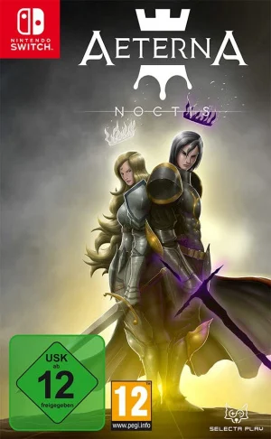

Coming from Spanish studio Aeternum Game Studios, Aeterna Noctis first launched on PlayStation 5 last year, and has now made its way to Switch. Luckily — barring load times — the conversion to Nintendo’s hybrid wonder is solid, with a stable frame rate. Aeterna Noctis is a Metroidvania clearly inspired by the greats of the genre like Symphony of the Night and especially Hollow Knight, although it doesn't quite live up to those games that inspired it.
An entity known as Chaos created the world of Aeterna, and blessed the denizens of the land with free will. Eventually, factions formed between those who followed the light and the darkness, clashing to take control of Aeterna. Chaos, displeased with this, curses the leaders of each faction with immortality, destined to battle for the throne for all eternity to maintain equilibrium for Aeterna.
Fresh off of taking an L from the Queen of Light, you — the King of Darkness — wake up in a derelict town, realising you must ascend to the heavens once more to battle your nemesis. However, in order to get back to the heavens, he must first collect seven fragments of power belonging to the Shrine of the Kings. Not only that, you've lost the majority of your powers, (a shocking move for a Metroidvania, we know) and they are locked behind ten doors in the Temple of the Kings, the keys for which are scattered around the world. These doors offer platforming challenges, which upon completion give you power-ups, from game-changers like a dash or slightly more underwhelming ones like extra gem slots, although the majority of important power-ups — such as the double jump or the excellent teleport shot — are obtained from bosses.

#GamingArena
Play Videogames In Brilliant Style—-Anytime, Anywhere
New Posts
Aeterna Noctis - An Ambitious Metroidvania That Doesn't Quite Hit The Mark
Nov 6
Modified by Sarah Ryan, a Junior studying History & Studio Arts
- 
üëçüèª 23 likes
✉️ 2 replies
Nickelodeon Kart Racers 3: Slime Speedway - Slams The Series Into Reverse
Nov 5
Modified by Michael, a Sophomore living with four dogs and a cat
Usually when a licensed karting game is released, it’s a one-and-done affair. Cram a load of well-known characters into tiny cars, fling them around a bunch of courses, collect the money and punt them out the door.
In that sense, you’ve got to give credit to developer Bamtang and publisher GameMill for holding firm and pressing on with its Nickelodeon Kart Racers series, which has now entered its third iteration. It’s just that, usually games like this are supposed to get better with each entry, and that’s not the case this time.
First, the positives. As with its predecessors, Nickelodeon Kart Racers 3: Slime Speedway celebrates a hefty chunk of Nickelodeon’s history, going all the way back to the early Nicktoons cartoons from 1991, all the way up to last year’s Paramount+ exclusive SpongeBob spin-off show, Kamp Koral. A healthy selection of 40 racers are eventually yours to choose from: while you’ve got significantly fewer than this when you first boot up the game, you unlock them through a combination of winning Grand Prix-style events and buying them from the in-game shop. And this time they even talk.
In that sense, you’ve got to give credit to developer Bamtang and publisher GameMill for holding firm and pressing on with its Nickelodeon Kart Racers series, which has now entered its third iteration. It’s just that, usually games like this are supposed to get better with each entry, and that’s not the case this time.
First, the positives. As with its predecessors, Nickelodeon Kart Racers 3: Slime Speedway celebrates a hefty chunk of Nickelodeon’s history, going all the way back to the early Nicktoons cartoons from 1991, all the way up to last year’s Paramount+ exclusive SpongeBob spin-off show, Kamp Koral. A healthy selection of 40 racers are eventually yours to choose from: while you’ve got significantly fewer than this when you first boot up the game, you unlock them through a combination of winning Grand Prix-style events and buying them from the in-game shop. And this time they even talk.

üëçüèª 44 likes
✉️ 5 replies